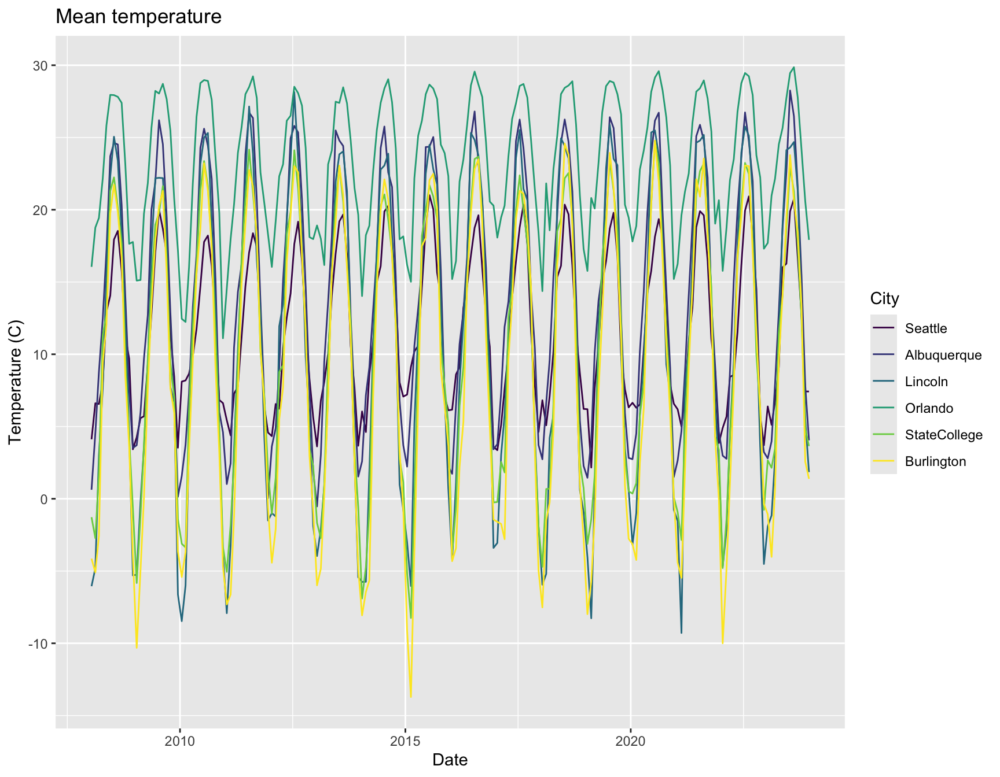
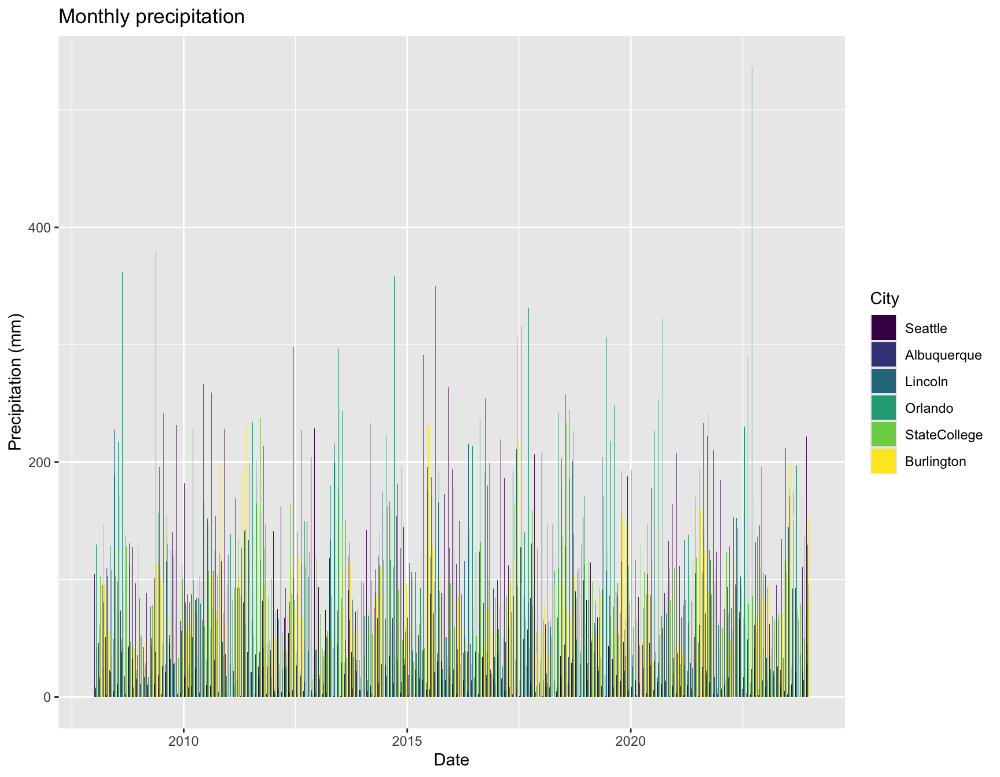
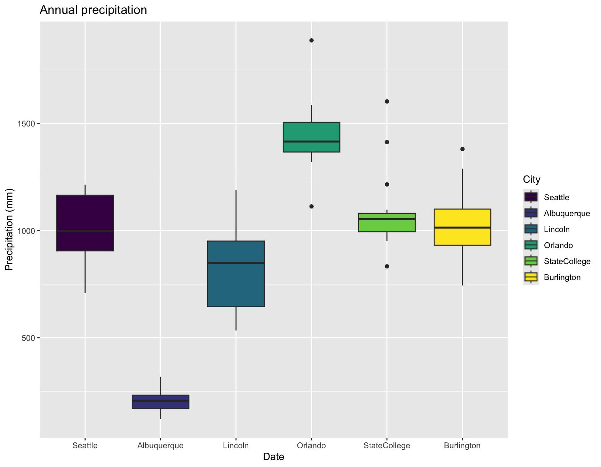
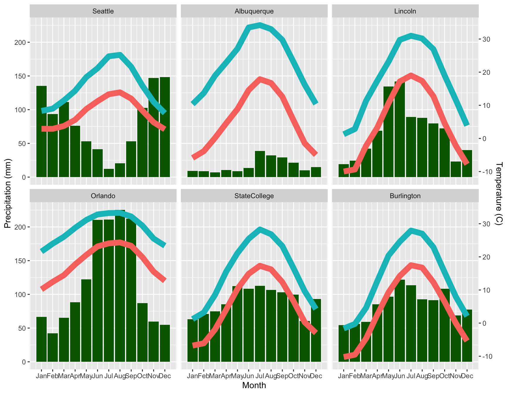
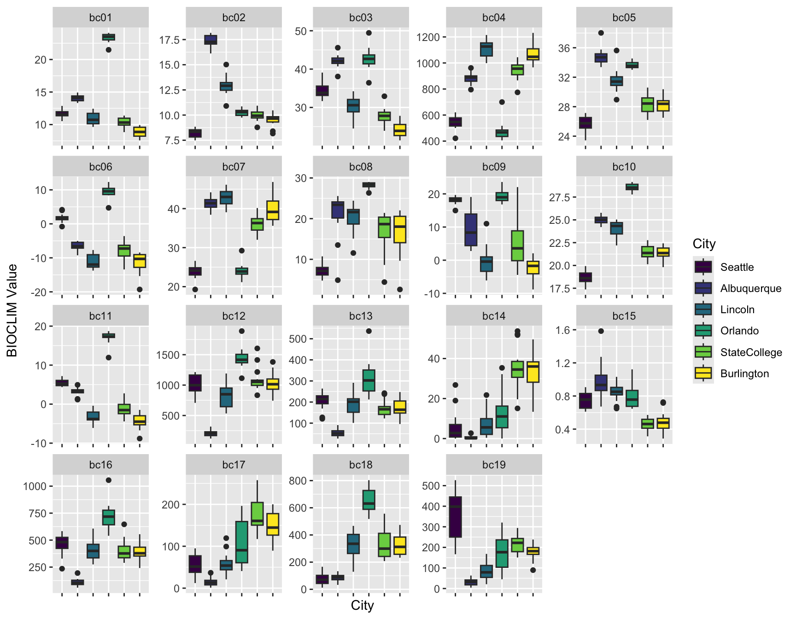
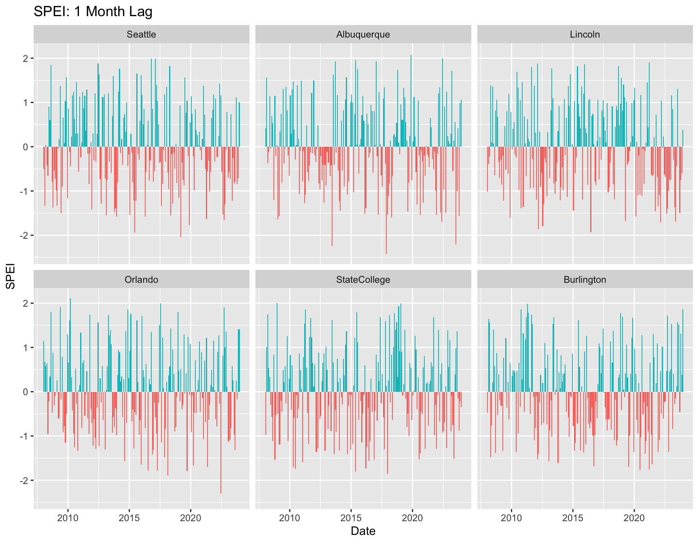
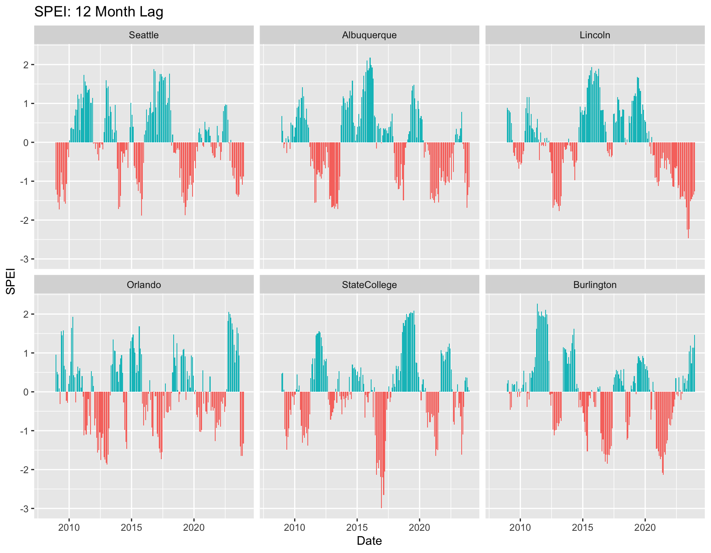
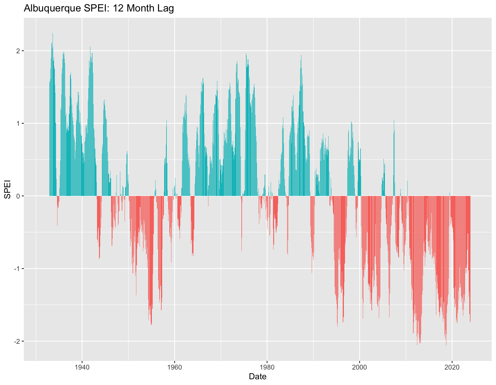

The BeeShiny tool offers downloads of weather data that match the extent of the other spatial data requested.
Currently, BeeShiny only offers monthly PRISM data on a 4km grid for mininum and maximum daily temperature and daily precipitation, but this will be expanded to daily data, and likely to other datasets and variables.
This tutorial will demonstrate:
ggplot2This tutorial uses the tidyr, SPEI, and
ggplot2 packages, and requires sp and
raster as dependencies.
library(ggplot2)
library(SPEI)
library(tidyr)We will compare weather for six cities across the US. The CSV file cities.weather.csv can be downloaded from BeeShiny, or can be obtained from the data/backups folder in the GitHub repo.
The file cities.csv should contain:
City,Lat,Long
Orlando,28.5384,-81.3789
StateCollege,40.7934,-77.8600
Burlington,44.4759,-73.2121
Lincoln,40.8137,-96.7026
Albuquerque,35.0844,-106.6504
Seattle,47.6061,-122.3328To create the weather dataset:
If you’ve done step 6 or downloaded the extracted file from the
GitHub repo, use read.csv() to load the file directly.
weather <- read.csv("cities.weather.csv")Bonus trick: R can read a file directly from a zipped archive, and it
can also let you specify a file location. You don’t need to try both
(but of course you can if you want!); weather will be
identical either way.
# weather <- read.csv(unz(file.choose(), "weather.csv"))The data file contains monthly temperature and precipitation for six cities, from 2008 to 2023. The plain data frame isn’t the most useful way to work with time series data.
For daily data, as.Date() is an effective way to create
a time series. Other more complex formats like POSIXct are
useful when time information is also needed. Since these data are
monthly, let’s arbitrarily choose the 15th of the month as the day of
record.
Another option would be to create a variable for consecutive months from 2008-01 to 2023-12, but using a date or date/time type makes available more tools for formatting and date/time arithmetic.
By default, R plots will put the cities into alphabetical order.
Turning City into an ordered factor will allow for custom
organization.
weather$date <- with(weather, as.Date(paste(year, month, "15"), format = "%Y %m %d"))
# examples of date formatting
# see ?strptime for a thorough list of possibilities
head(format(weather$date, "%b %Y"))## [1] "Jan 2008" "Feb 2008" "Mar 2008" "Apr 2008" "May 2008" "Jun 2008" head(format(weather$date, "%B %Y"))## [1] "January 2008" "February 2008" "March 2008" "April 2008" "May 2008"
## [6] "June 2008" # set order for cities
weather$City <- factor(weather$City, ordered = TRUE, levels = with(weather, unique(City[order(Long)])))
# daily mean temperature can be useful
weather$tmean <- with(weather, (tmin + tmax) / 2)Temperature is often displayed as a line graph, and precipitation as a bar graph showing the total.
ggplot(weather, aes(x = date, y = tmean, color = City)) +
labs(x = "Date", y = "Temperature (C)", title = "Mean temperature") +
geom_line()
ggplot(weather, aes(x = date, y = pr, fill = City)) +
labs(x = "Date", y = "Precipitation (mm)", title = "Monthly precipitation") +
geom_bar(pos = "dodge", stat = "identity")
That isn’t particularly helpful for comparing cities, though.
What about a boxplot of precipitation by year?
First, calculate the annual sum of precipitation for each city and year, then plot the values.
prcp <- aggregate(pr ~ year + City, data = weather, FUN = "sum")
ggplot(prcp, aes(x = City, y = pr, fill = City)) +
labs(x = "Date", y = "Precipitation (mm)", title = "Annual precipitation") +
geom_boxplot()
A third common display for weather data is a combined plot of mean
temperature and precipitation together. That takes a few more steps in
ggplot2, but is entirely feasible. The trickiest part
putting both on the same scale to get the double y axes.
monthly <- aggregate(. ~ month + City, data = subset(weather, select = c(City, month, pr, tmax, tmin)), FUN = "mean")
temp.range <- with(monthly, range(c(tmin, tmax)))
pr.range <- range(monthly$pr)
b <- diff(pr.range)/diff(temp.range)
a <- pr.range[1] - b * temp.range[1]
ggplot(monthly) +
geom_bar(aes(x = month, y = pr), stat = "identity", fill = "darkgreen") +
geom_line(aes(x = month, y = a + tmin * b, color = "blue", linewidth = 2)) +
geom_line(aes(x = month, y = a + tmax * b, color = "red", linewidth = 2)) +
scale_y_continuous("Precipitation (mm)", sec.axis = sec_axis(~ (. - a)/b, name = "Temperature (C)")) +
scale_x_continuous("Month", breaks = 1:12, labels = month.abb) +
facet_wrap( ~City) +
theme(legend.position = "none")
Often simply temperature and precipitation are not useful enough, and we want some indices that are biologically relevant for the organisms of interest.
One commonly-used set of indices is the BIOCLIM variables, which are:
where a “quarter” is any consecutive three months. Most commonly, each year is wrapped around, so a quarter might be Dec-Jan-Feb, where December and January are both 2023, rather than December 2023 and January 2024. That makes it possible to calculate these indices for a single year. It’s what we will do here, as is conventional, but you might want to use continuous months for other applications.
I previously used the climates package, but it has as dependencies several packages that are no longer on CRAN, so I’ve provided you a function.
There’s another package function, dismo::bioclim() that
does something related but different.
source("bioclim.R")
# calculate bioclim variables for one city
statecollege.bioclim <- bioclim(subset(weather, City == "StateCollege"))
###
# calculate bioclim variables for each city
all.bioclim <- lapply(split(weather, weather$City), bioclim)
# create a long-form data frame for plotting
all.bioclim <- lapply(seq_along(all.bioclim), function(i) {
all.bioclim[[i]]$City <- names(all.bioclim)[i]
all.bioclim[[i]]
})
all.bioclim <- do.call(rbind.data.frame, all.bioclim)
all.bioclim$City <- factor(all.bioclim$City, ordered = TRUE, levels = levels(weather$City))
all.bioclim.long <- tidyr::pivot_longer(all.bioclim, cols = 2:20)
# plot the variables for each city
ggplot(all.bioclim.long, aes(x = City, y = value, fill = City)) +
labs(x = "City", y = "BIOCLIM Value") +
geom_boxplot() +
facet_wrap( ~name, scales = "free") +
theme(axis.text.x = element_blank())
Drought is a concern in many parts of the US (alongside flooding!), and the SPEI drought index is commonly used to quantify drought at multiple timescales, here 1, 6, and 12 months lag.
The SPEI package includes functions for calculating SPEI, as well as several potential evapotranspiration methods and a few other things.
# for each city, calculate PET and water balance
# and then three different SPEI values
# save the SPEI values in a list
weather$PET <- NA
weather$BAL <- NA
weather$SPEI01 <- weather$SPEI06 <- weather$SPEI12 <- NA
for(thiscity in unique(weather$City)) {
# simplest form of PET calculation
thispet <- with(subset(weather, City == thiscity),
thornthwaite(tmean, Lat[1]))
thisbal <- with(subset(weather, City == thiscity),
pr - thispet)
# save those results
weather$PET[weather$City == thiscity] <- thispet
weather$BAL[weather$City == thiscity] <- thisbal
# calculate the SPEI values
thisspei01 <- spei(thisbal, 1)
thisspei03 <- spei(thisbal, 3)
thisspei12 <- spei(thisbal, 12)
thisspei36 <- spei(thisbal, 36)
# save just the fitted values for plotting
weather$SPEI01[weather$City == thiscity] <- thisspei01$fitted
weather$SPEI03[weather$City == thiscity] <- thisspei03$fitted
weather$SPEI12[weather$City == thiscity] <- thisspei12$fitted
}
# clean up, if desired
rm(list = ls(pattern = "^this"))The plot method for SPEI uses base graphics rather than
ggplot2.
Note: The base plot method is currently broken, so the above
code chunk saves the fitted values from the SPEI objects so we can use
ggplot2 for graphics.
# add a column for positive/negative SPEI for coloring the bar plots
weather$POS01 <- weather$SPEI01 >= 0
weather$POS03 <- weather$SPEI03 >= 0
weather$POS12 <- weather$SPEI12 >= 0
ggplot(weather, aes(x = date, y = SPEI01, fill = POS01)) +
labs(x = "Date", y = "SPEI", title = "SPEI: 1 Month Lag") +
geom_bar(pos = "dodge", stat = "identity") +
facet_wrap( ~City) +
theme(legend.position = "none")
ggplot(weather, aes(x = date, y = SPEI12, fill = POS12)) +
labs(x = "Date", y = "SPEI", title = "SPEI: 12 Month Lag") +
geom_bar(pos = "dodge", stat = "identity") +
facet_wrap( ~City) +
theme(legend.position = "none")## Warning: Removed 66 rows containing missing values or values outside the scale range
## (`geom_bar()`).
But… I thought the Southwest was experiencing a prolonged drought?
Yes, but from the perspective of the 2008-2023 timeperiod, not as noticeably.
A longer timespan might show something different. This example also demonstrates how to aggregate daily to monthly values before calculating SPEI or BIOCLIM indices.
The file abq.ghcn.RDS contains daily weather data for the Albuquerque, NM airport from GHCN. The column headings are the GNCN standard, but extraneous columns have been removed and the data trimmed to 1932-2023.
# load and clean up data
abq <- readRDS("abq.ghcn.RDS")
abq$TMEAN.VALUE <- with(abq, (TMIN.VALUE + TMAX.VALUE) / 2)
# precipitation is sum; temperature is mean!
abq.monthly.prcp <- aggregate(PRCP.VALUE ~ MONTH + YEAR, data = abq, FUN = "sum", na.rm = TRUE)
abq.monthly.temp <- aggregate(TMEAN.VALUE ~ MONTH + YEAR, data = abq, FUN = "mean", na.rm = TRUE)
thispet <- thornthwaite(abq.monthly.temp$TMEAN.VALUE, lat = 35.0419)
thisbal <- abq.monthly.prcp$PRCP.VALUE - thispet
abq.spei12 <- spei(thisbal, 12)
abq.monthly <- data.frame(abq.monthly.temp, PRCP.VALUE = abq.monthly.prcp$PRCP.VALUE,
SPEI12 = abq.spei12$fitted,
POS12 = abq.spei12$fitted >= 0)
abq.monthly$date <- with(abq.monthly, as.Date(paste(YEAR, MONTH, "15"), format = "%Y %m %d"))
ggplot(abq.monthly, aes(x = date, y = SPEI12, fill = POS12)) +
labs(x = "Date", y = "SPEI", title = "Albuquerque SPEI: 12 Month Lag") +
geom_bar(pos = "dodge", stat = "identity") +
theme(legend.position = "none")## Warning: Removed 11 rows containing missing values or values outside the scale range
## (`geom_bar()`).
args(bioclim) to see the function arguments. Pay attention
to the column names!If you’re interested in beeshiny, please give us your feedback on usability and data availability!
You can also help us by telling us a little about yourself and your common use cases.